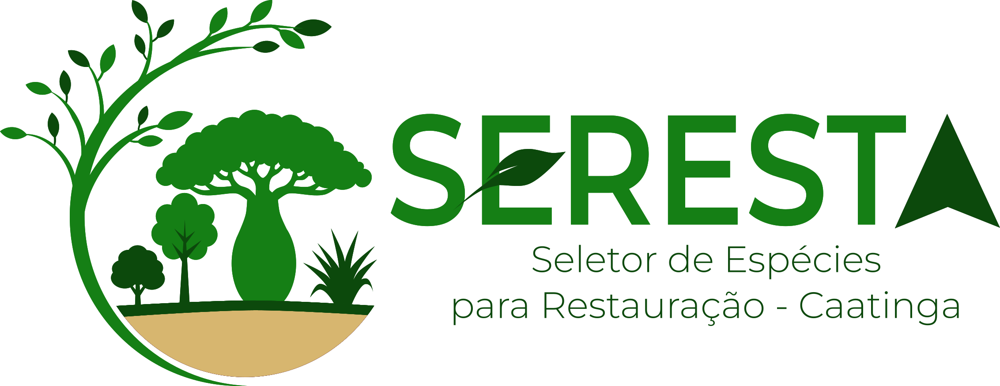

Veja como é



Ferramenta para seleção de espécies vegetais resistentes às mudanças climáticas baseada em diversidade funcional e serviços ecossistêmicos.
Acessar aplicaçãoSelecione no mapa a área onde deseja implementar o projeto de restauração na Caatinga.
Defina quais serviços ecossistêmicos são prioritários para o seu objetivo de restauração.
Receba automaticamente a lista de espécies que maximizam os serviços desejados para a sua localidade.
Este é um produto da Tese de Doutorado de Thieres Almeida no Programa de Pós-Graduação em Ecologia e Conservação da Universidade Federal de Sergipe. A ferramenta tem o objetivo de auxiliar técnicos, pesquisadores e pessoas interessadas na seleção de espécies vegetais para projetos de restauração ecológica na Caatinga.
Autor: Thieres Santos Almeida
Orientação: Dr. Sidney Feitosa Gouveia
Instituição: Universidade Federal de Sergipe
As recomendações são baseadas em modelos de nicho ecológico e dados funcionais que podem conter lacunas de amostragem e incertezas metodológicas. Os resultados devem ser interpretados como um ponto de partida técnico, não como uma prescrição definitiva, e recomenda-se validação em campo e revisão por especialistas antes da implementação.